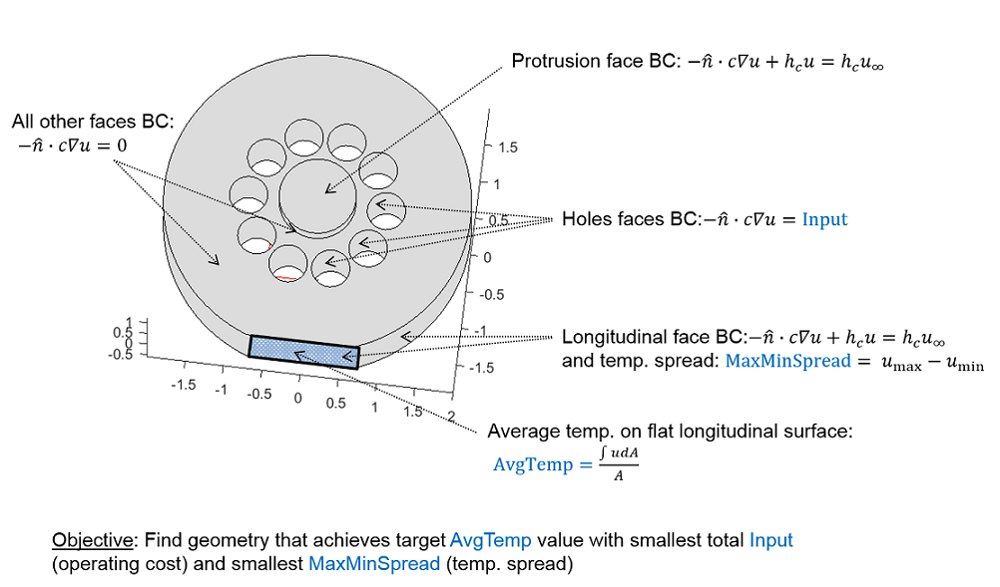
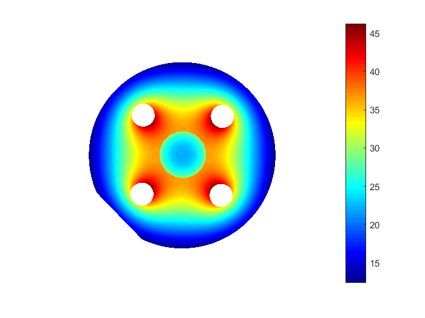

Contents
Best Placement of Holes in Cylinder to Achieve Target Average Temperature - A Parametric Study
This examples conducts a parametric study in which heat conduction simulation is performed over a set of similar geometries to determine which geometry "best" meets an average temperature on an specified output area. The geometry is a cylinder like structure as shown below and has a ring of holes running longitudinally through the structure. The problem has the following characteristics:

Boundary conditions
- The input heat source is applied on the faces of the holes.
- The longitudinal surface and the surface on the center protrusion have convective boundary conditions. The output surface is the rectangular subsurface of the longitudinal surface. The objective of the example is to achieve a target average temperature on output surface in the "best" manner possible as described later.
- All other faces not indicated above are insulated and thus have zero Neumann boundary conditions.
Geometry
- Each geometry has a unique pair of (#holes, radius of ring of holes). All other geometry parameters are held constant.
- Although it is possible to exploit symmetry in some of the geometries in order to reduce the problem to 2 geometry dimensions, it was not done so in this example.
Results
- Results are collected from all simulations and the best geometry in terms of lowest max-min temperature spread on the longitudinal face and the best geometry for lowest operating cost (input flux) are identified.
- The implementation uses 'parfeval' from the Parallel Computing Toolbox to speed up the parametric study.
function heating
Import candidate geometries and create models
The STL files are read - each file corresponds to a different parameter-pair: (#holes, radius of ring of holes).
fileList = ls('cyl_*.STL');
fileList = mat2cell(fileList,ones(size(fileList,1),1));
The PDE is a scalar, laplace equation
N = 1;
A table will be created to organize data and results from all runs
Table column corresponding to the PDE models
Model = cellfun(@(~) createpde(N),fileList,'UniformOutput',false);
Table columns corresponding to #holes and radius (note: this is the radius of the ring and not the radius of the hole) are extracted.
paramList = cellfun(@(fileName) regexpi(fileName,'cyl_(.*)_(.*).STL','tokens'),fileList, 'UniformOutput',false); NumHoles = cellfun(@(entry) str2double(entry{1}(1)),paramList,'UniformOutput',false); HolesRadius = cellfun(@(entry) str2double(entry{1}(2)),paramList,'UniformOutput',false);
Create table
T = [table(Model), cell2table(NumHoles,'RowNames',fileList), cell2table(HolesRadius)];
Import geometries into the PDE models
for k = 1:size(T,1) importGeometry(T.Model{k},T.Properties.RowNames{k}); % The relation of faces to holes is known; report errors for unexpected % relation if T.Model{k}.Geometry.NumFaces ~= (3 + T.NumHoles(k) + 2) error('unexpected number of faces'); end end
Sort table, first by #holes and then by radius
T = sortrows(T,{'NumHoles','HolesRadius'},{'ascend','ascend'});
Plot two extreme geometries to show the range of geometry variations
figure
pdegplot(T.Model{1},'FaceLabels','on');
title(T.Properties.RowNames{1});
view(0,90);
figure
pdegplot(T.Model{end},'FaceLabels','on');
title(T.Properties.RowNames{end});
view(0,90);
Input setup
Ambient temperature
ambientTemp = 6;
Target average nodal temperature on output surface
targetTemp = 15;
PDE coefficients for laplace equation (heat conduction)
c = 1e-1; a = 0; f = 0;
Any face in (inputFacesBegin:(inputFacesBegin +numHoles)) is an input heat source face
inputFacesBegin = 4;
Output setup
Table column for capturing max-min temperature on output area; it is desirable to have a low spread
MaxMinSpread = zeros(size(T,1),1);
Table column for operating cost (total flux going into solid via the input heat source faces); it is desirable to minimize this
OperatingCost = zeros(size(T,1),1);
AvgTempVariable column corresponds to the variable contribution towards the average temperature solution on the output surface. The constant contribution is simply ambientTemp.
AvgTempVariable = zeros(size(T,1),1);
Table column for scale factor for AvgTempVariable to help match targetTemp
InputForTargetTemp = zeros(size(T,1),1);
Add these columns to table
T = [T table(AvgTempVariable,InputForTargetTemp,MaxMinSpread,OperatingCost)];
Face on which the max-min temperature spread is measured.
MaxMinSpreadFace = 1;
Output surface in XZ plane: -offsetX:offsetX, offsetY, minZ:maxZ where average temperature is calculated
offsetY = -1.875; offsetX = sqrt(2^2-offsetY^2); minZ = 0; maxZ = 1;
Convective heat transfer coefficient
hc = 0.3;
Function for applying boundary conditions, meshing, and solving per geometry
function [avgTemp,maxMinSpread,resultVariableBC] = solveGeometry(model,numHoles) % generate mesh with 'hmax' = 1/4th of hole radius model.generateMesh('hmax',0.25/4); % extract nodes on MaxMinSpreadFace [p,e,t] = meshToPet(model.Mesh); maxMinSpreadFaceNodes = e.getNodes(MaxMinSpreadFace); % variable component of boundary conditions is generalized Neumann BC % on maxMinSpreadFaceNodes and also face on center protrusion model.applyBoundaryCondition('Face',[MaxMinSpreadFace,model.Geometry.NumFaces],... 'q',hc); % apply unit flux on input heat source faces model.applyBoundaryCondition('Face',(inputFacesBegin:(inputFacesBegin + numHoles)),'g',1); % solve to get result for variable BC resultVariableBC = assempde(model,c,a,f); % calculate max-min spread t1 = resultVariableBC(maxMinSpreadFaceNodes); maxMinSpread = max(t1) - min(t1); % calculate average temp. on rectangular output surface area myInterpolant = pdeInterpolant(p,t,resultVariableBC); function res = intFun(x,z) % Y offset is pushed a bit inwards to avoid missing data along % Y axis res = evaluate(myInterpolant,x,(offsetY+0.01)*ones(size(x)),z); res = reshape(res,size(x)); % NaNs dues to XZ plane overshoot are set to zero res(find(isnan(res)))=0; return end area = 2*offsetX*(maxZ-minZ); avgTemp = integral2(@intFun,-offsetX,+offsetX,minZ,maxZ)/area; end
Solve for all geometries
Use parfeval to perform asynchronous computation and speed up overall simulation time
pool = gcp();
Starting parallel pool (parpool) using the 'local' profile ... connected to 2 workers.
Futures are created for the geometries
for idx = 1:size(T,1) % coefficients of PDE F(idx) = parfeval(pool,@solveGeometry,3,T.Model{idx},T.NumHoles(idx)); end
Populate table with results of computations that are performed asynchronously
for idx = 1:size(T,1) % get result for next geometry that was solved [completedIdx,avgTemp,maxMinSpread] = fetchNext(F); % Set the average temperature contribution of the variable part of the % BC T.AvgTempVariable(completedIdx) = avgTemp; fprintf('%d of %d models simulated\n',completedIdx,size(T,1)); % compute scale factor for the contribution of the variable part. As % mentioned earlier ambientTemp corresponds to contribution of the constant part. T.InputForTargetTemp(completedIdx) = (targetTemp-ambientTemp)./T.AvgTempVariable(completedIdx); T.MaxMinSpread(completedIdx) = maxMinSpread; end
2 of 41 models simulated 1 of 41 models simulated 3 of 41 models simulated 4 of 41 models simulated 5 of 41 models simulated 6 of 41 models simulated 7 of 41 models simulated 8 of 41 models simulated 9 of 41 models simulated 10 of 41 models simulated 11 of 41 models simulated 12 of 41 models simulated 13 of 41 models simulated 14 of 41 models simulated 15 of 41 models simulated 16 of 41 models simulated 17 of 41 models simulated 18 of 41 models simulated 20 of 41 models simulated 19 of 41 models simulated 21 of 41 models simulated 22 of 41 models simulated 23 of 41 models simulated 24 of 41 models simulated 25 of 41 models simulated 26 of 41 models simulated 27 of 41 models simulated 28 of 41 models simulated 29 of 41 models simulated 30 of 41 models simulated 31 of 41 models simulated 32 of 41 models simulated 33 of 41 models simulated 34 of 41 models simulated 36 of 41 models simulated 37 of 41 models simulated 35 of 41 models simulated 39 of 41 models simulated 40 of 41 models simulated 38 of 41 models simulated 41 of 41 models simulated
Report and visualize results
Calculate operating cost
T.OperatingCost = T.InputForTargetTemp.*T.NumHoles;
Top-5 operating cost sorted from smallest to largest
TOpCost = sortrows(T,'OperatingCost');
TOpCost(1:5,:)
ans =
Model NumHoles HolesRadius AvgTempVariable InputForTargetTemp MaxMinSpread OperatingCost
__________________ ________ ___________ _______________ __________________ ____________ _____________
cyl_4_1.2.STL [1x1 pde.PDEModel] 4 1.2 1.9545 4.6048 0.7581 18.419
cyl_4_1.1.STL [1x1 pde.PDEModel] 4 1.1 1.8816 4.7831 0.60484 19.133
cyl_4_1.0.STL [1x1 pde.PDEModel] 4 1 1.8197 4.9458 0.49596 19.783
cyl_3_1.2.STL [1x1 pde.PDEModel] 3 1.2 1.3607 6.614 0.69789 19.842
cyl_3_1.1.STL [1x1 pde.PDEModel] 3 1.1 1.354 6.6468 0.56056 19.94
Plot result for geometry with lowest operating cost
[~,~,resultVariableBC] = solveGeometry(TOpCost.Model{1},TOpCost.NumHoles(1));
u_Optimal = resultVariableBC*TOpCost.InputForTargetTemp(1) + ambientTemp;
figure
pdeplot3D(TOpCost.Model{1},'colormapdata',u_Optimal);
view(45,90);
snapnow
view(114,51);
snapnow
 Top-5 max-min spread sorted from smallest to largest
TMaxMinSpread = sortrows(T,'MaxMinSpread');
TMaxMinSpread(1:5,:)
ans =
Model NumHoles HolesRadius AvgTempVariable InputForTargetTemp MaxMinSpread OperatingCost
__________________ ________ ___________ _______________ __________________ ____________ _____________
cyl_3_0.9.STL [1x1 pde.PDEModel] 3 0.9 1.3254 6.7903 0.41703 20.371
cyl_4_0.9.STL [1x1 pde.PDEModel] 4 0.9 1.7654 5.098 0.44566 20.392
cyl_3_1.0.STL [1x1 pde.PDEModel] 3 1 1.342 6.7062 0.4798 20.119
cyl_2_0.9.STL [1x1 pde.PDEModel] 2 0.9 0.71197 12.641 0.48223 25.282
cyl_5_0.9.STL [1x1 pde.PDEModel] 5 0.9 2.1201 4.245 0.48678 21.225
Plot result for geometry with lowest max-min spread
[~,~,resultVariableBC] = solveGeometry(TMaxMinSpread.Model{1},TMaxMinSpread.NumHoles(1));
u_Optimal = resultVariableBC*TMaxMinSpread.InputForTargetTemp(1) + ambientTemp;
figure
pdeplot3D(TMaxMinSpread.Model{1},'colormapdata',u_Optimal);
view(45,90);
snapnow
view(114,51);
snapnow
Takeaways
- Programmatically solve PDEs and perform parametric studies. Useful if there is little fundamental variation between different design points.
- Perform custom post-processing with useful reports
- Use Parallel Computing Toolbox to accelerate simulations
end